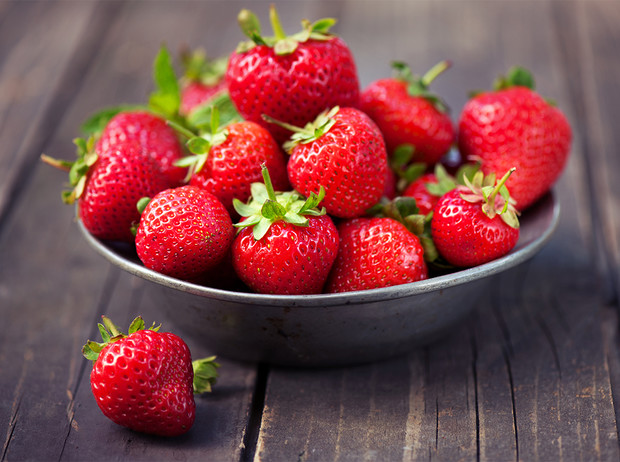

Напоминание
Некоторым скриптам, логичнее находиться рядом с группой элементов, для которых написан этот скрипт.
Например, скрипт проверки валидации формы, логичнее расположить рядом с формой и элементами формы.
Такие скрипты находятся в HTML-разделе с суффиксом - JS
Проверка на устаревший браузер
Проверка на IE - трюк: он не использует append. Этим и воспользуемся.
Составные части:
- HTML - добавить в проект разметку блока модального окна
#checkBrowser.
Он находится в библиотеке, на страницеindex.html.
Добавлять его перед закрывающим тегомbody. - CSS - добавить в проект CSS-файл
check-browser.scss; - JS - добавить в проект JS-файл
check-browser.js;
Важно:
- Если собираем в проекте
js-модулинаwebpackнеобходимо использоватьBabel - Если желания использовать
Babelнет,
тогда необходимо копировать файлcheck-browser.jsиз папкиsrcв папкуbuild.
Сделать это можно, н-р., с помощьюGulp. Так сделано в библиотеке.
И не забыть подключить этот скопированный файл к html-странице.
Так сделано в библиотеке для страницыindex.html.
Паттерн - добавить элемент на страницу
Добавить один элемент:
const ul = document.createElement('ul'); // создать элемент ul
ul.classList.add('matrix__list'); // доб. класс элементу
matrix.append(ul); // добавить элемент на страницу, в конец блока matrix
Добавить циклом много элементов:
const ul = document.createElement('ul'); // создать элемент ul
ul.classList.add('matrix__list'); // доб. класс элементу
matrix.append(ul);// добавить элемент на страницу, в конец блока matrix
for (let i = 0; i < 5; i++) {
const li = document.createElement('li'); // создать элемент li
li.classList.add('matrix__item'); // доб. класс элементу
ul.append(li); // добавить элемент на страницу, в ul, т.е. в конец родителя.
}
}
Т.о. цикл будет добавлять новые элементы в конец блока-родителя, и следовательно, элементы, добавленные первыми, будут вверху.
Ползунок v1 на JS
Обязательно проверять кросс-браузерность.
В списке подозреваемых: IE и EDGE.
Cкрипт range-custom.js.
Составные части:
- HTML - добавить в проект разметку - скопировать из библиотеки;
Важно! Для блока.rangedevtools покажет разметку, в которую скрипт уже добавил блок.range__wrapper.
Блок.range__wrapperдля первоначальной разметки не нужен! - CSS - добавить в проект CSS-файл
range.scss; - JS - добавить в проект JS-файл
range-custom.js; - Все.
Принцип работы:
JS-файл блока:
- для
.range__inputдобавляетopacity = '0'; - в HTML-файл, после
.range__inputдобавляет разметку с классами:.range__wrapperи.range__wrap-inner- обертки;.range__track- фоновая линия ползунка;.range__progress- линия отображенияvalue;.range__handle- перемещаемый элемент ползунка, т.е. thumb;.range__value-используется для вывода значения value. Если не нужен, удалить из скрипта;
- JS-файл
custom-range.jsотлавливает значениеvalueу штатногоinput,
изменяет ширину.range__progressи координату по оси X для.range__handle; - Все.
P.S.Ширина .range__progress изменяется от правого края. Это нужно для того, чтобы .range__track можно было дать заливку градиентом, и при изменении value была видна только часть градиента.
Ползунки (несколько) v2 на JS
Обязательно проверять кросс-браузерность.
В списке подозреваемых: IE и EDGE.
Cкрипт range-custom-v2.js.
Составные части:
- HTML - добавить в проект разметку - скопировать из библиотеки;
Важно! Для блока.range-v2devtools покажет разметку, в которую скрипт уже добавил блок.range-v2__wrapper.
Блок.range-v2__wrapperдля первоначальной разметки не нужен! - CSS - добавить в проект CSS-файл
range-v2.scss; - JS - добавить в проект JS-файл
range-custom-v2.js; - Все.
Принцип работы:
JS-файл блока:
- для
.range-v2__inputдобавляетopacity = '0'; - в HTML-файл, после
.range-v2__inputдобавляет разметку с классами:.range-v2__wrapperи.range-v2__wrap-inner- обертки;.range-v2__track- фоновая линия ползунка;.range-v2__progress- линия отображенияvalue;.range-v2__handle- перемещаемый элемент ползунка, т.е. thumb;.range-v2__value-используется для вывода значения value. Если не нужен, удалить из скрипта;
- JS-файл
custom-range-v2.jsотлавливает значениеvalueу штатногоinput,
изменяет ширину.range-v2__progressи координату по оси X для.range-v2__handle; - Все.
Ползунки
Таймер обратного отсчета
Скрипт timer-reverse.js
Конечное время таймера задается в переменной deadline
При необходимости, значение в переменную можно получить от сервера, или от пользователя.
Модальное окно - базовый шаблон
Скрипт modal.js.
Обычно размещают модальное окно перед закрывающим тегом /body>.
1. При нажатии на кнопку "открыть..." - открывается модальное окно и затеняется фон.
2. Закрытие модального окна:
- Нажатием на кнопку "закрыть..."
- При нажатии свободное пространство (затененный фон).
- При нажатии на клавиатуре Esc.
В проекте использовать нужный механизм закрытия, лишнее удалить.
Модальное окно
Пример модального окна, которое создано с использованием JS.
Его можно использовать в широком диапазоне, начиная от вывода сообщений и заканчивая формой регистрации.
Модальное окно - форма входа
Скрипт modal-2.js.
modal-2.js нуждается в рефакторинге. Не использовать!
Обычно размещают модальное окно перед закрывающим тегом /body>.
1. При нажатии на кнопку "открыть..." - открывается модальное окно и затеняется фон.
2. Добавлен фокус на поле ввода.
3. Добавлена проверка на пустые поля.
4. Добавлено хранение данных пользователя в localStorage.
5. Закрытие модального окна:
- Нажатием на кнопку "закрыть..."
- При нажатии свободное пространство (затененный фон).
- При нажатии на клавиатуре Esc.
5. Добавлена анимация:.
- Форма опускается сверху вниз
- Тряска формы при вводе пользователем неправильных данных.
P.S.
При использовании в input атрибута required, форма не будет отправляться,
и, на кнопке формы Отправить не будет события submit.
Следовательно, скрипт "тряски" не будет работать.
Выбираем что-то одно: или скрипт "тряски", или required.
Модальное окно
Пример модального окна, которое создано с использованием JS.
Его можно использовать в широком диапазоне, начиная от вывода сообщений и заканчивая формой регистрации.
Табы на JS - .tabs
Скрипт tabs.js.
0. Йога, массажи и плавание в море - помогут уставшей спине! Индийские йоги считали, что здоровье человека можно определить по тому, насколько здоров и гибок у него позвоночник.
1. Аюрведа и йога утверждают, что главным источником здоровья нашего организма является здоровый ум.
2.Стрессы, жизнь в условиях города, плохая экология, загрязненные продукты и вода, напряженный ритм жизни - все это день ото дня отбирает у нас молодость и хорошее здоровье.
3. Несколько лет назад мы разработали специальные программы по йоге и аюрведе - и мы поняли, что они отлично работают - на опыте 530 наших туристов!
Бургер
- На странице может быть один или несколько бургеров.
- Бургер может просто анимироваться или также открывать другой блок по клику на бургер.
1. Бургер одинокий - один на странице.
Анимированное превращение в крестик по добавлению модификатора:
JS блока burger.js по клику на бургере, добавляет модификатор бургеру.
По клику на бургер, расположенный ниже, представлен код такого простейшего случая.
const burger = document.querySelector(".burger");
/*события по клику на burger*/
burger.addEventListener("click", function (event) {
event.preventDefault();
/* добавляем модификатор на burger, бургер анимируется в крестик */
burger.classList.toggle("burger--close");
});
2. Бургер одинокий - открывает/закрывает другой блок, н-р. меню или блок с кодом.
Анимированное превращение в крестик по добавлению модификатора:
JS блока
burger.jsпо клику на бургере, добавляет модификатор бургеру.Открытие другого блока по клику на бургере:
JS блока
burger.jsпо клику на бургере, переключает класс на нужном элементе.
По клику на бургер, расположенный ниже, представлен код такого простейшего случая.
const burger = document.querySelector(".burger");
const element = document.querySelector(".ИмяКласса");
/*события по клику на burger*/
burger.addEventListener("click", function (event) {
event.preventDefault();
/* добавляем модификатор на burger, бургер анимируется в крестик */
burger.classList.toggle("burger--close");
/* добавляем модификатор на element, блок ИмяКласса откр/закр */
element.classList.toggle("ИмяКласса--shown");
});
3. Бургеров > одного - открывает/закрывает другой блок, н-р. меню или блок с кодом.
JS блока burger-some.js. Изучаем вдумчиво!
Так как бугреров > 1, то механизм работы несколько иной.
1. В начале нужно определить, на каком именно бургере произошел клик.
Для этого вешаем единый обработчик на элемент document: document.onclick = function (event) {...}
Далее проверяем, где произошел клик: if (target.classList.contains("burger" || "burger--close")) {...}
и если на каком-либо из бургеров, то выполняем следующие действия для этого бургера:
2. Анимированное превращение в крестик по добавлению модификатора:
Добавляем модификатор для анимации к этому бургеру:
target.classList.toggle("burger--close");
3. Реализация открытия другого блока по клику на бургере.
По клику на бургер, JS блока burger-some.js:
- записывает в переменную-1 идентификатор
id, переданный в data-атрибутеdata-target-id; - записывает в переменную-2 имя класса, переданное в data-атрибуте
data-target-class-toggle; - находит в документе элемент с нужным
idи переключает (добавляет/удаляет) на этом элементе класс. Имя класса берет из переменной-2.
/* см. содержимое файла burger-some.js; */
dropdown - один уровень вложенности
dropdown - два уровня вложенности
Плавный скролл к якорю.
без JS / с JS.
Делаем классическую разметку с href="#некий_id" + плюс расставляем в нужных местах эти id.
Далее два варианта:
Вариант 1:
использовать CSS - свойство scroll-behavior: smooth;
Важно!
MDN: scroll-behavior: smooth; добавлять контейнеру, внутри которого нужна прокрутка. - не работает,
w3schools.com: scroll-behavior: smooth; добавлять на html {scroll-behavior: smooth;} - работает.
Не работает в IE + EDGE.
Т.е. в IE + EDGE не будет плавной прокрутки к якорю.
Вариант 2:
использовать JS.
Работает в IE & EDGE.
Скрипт: scroll-anchor.js
Как использовать scroll-anchor.js:
- разметку делаем как указано выше;
- подключаем скрипт;
- все.
Добавить класс при скроле, JS.
Все делает скрипт scroll-add-class.js.
- Отлавливаем событие по скролу.
- Если скролл > ...px, то доб. требуемый класс к нужному элементу.
- Иначе, удаляем этот же класс у элемента.
- Все.
Ссылка "вверх", JS
Ссылка «вверх» в нижнем правом углу страницы.
Cкрипт to-top.js делает невидимой / видимой ссылку «вверх».
- Делаем классическую разметку для ссылки с
href="#некий_id"+ плюс расставляем в нужном месте (вверх страницы) этотid. Т.е. скролл вверх делаем средствамиCSS. - Если JS не включен у пользователя, тогда ссылка видна сразу.
- Если JS включен, скрипт добавляет модификатор
"*--no--visible"для ссылки (ссылка не видна). - Далее, скрипт отлавливает событие по скролу.
- Если скролл больше указанного в Javascript-файле блока значения, то скрипт удаляет модификатор
"*--no--visible"у ссылки. - Если скролл меньше указанного в Javascript-файле блока значения, скрипт добавляет этот же класс элементу (т.е. ссылке).
- Все.
Можно просто сделать ссылку на id + использовать CSS - свойство scroll-behavior: smooth;.
Но!
"Это не работает в IE + EDGE.
Т.е. в IE + EDGE не будет плавной прокрутки к якорю.
Vivus.js - рисование анимации для SVG
Начало: vivus-instant
Документация: github.com/maxwellito/vivus
Как использовать vivus-instant для анимированного текста:
- в Illustrator:
- набрать нужный текст;
- тексту задать обводку с толщиной линии и цветом;
- заливку тексту задать прозрачную;
- должен получиться контурный текст;
- при экспорте svg указать: шрифт - преобразовать в кривые.
- в vivus-instant:
- полученный svg-файл закинуть в vivus-instant;
- настроить праметры анимации
- сохранить файл с анимацией в папку проекта;
- в разметке вставить svg > use c с нужным id.
Для просмотра анимированного SVG, обновить страницу.
Ошибка! При встраивании на страницу через svg-sprite не работает.
Google Maps
Как добавить Google Maps на страницу.
- если просто карту с дефолтным маркером - использовать
iframe
Быстрый старт: Документация Google width iframe - если карту с кастом-маркером, маштабом и т.д.
API-key + JS
Быстрый старт: Документация Google width API-KEYВнимание!
При добавлении Google Maps на страницу, помимо API-key, нужно привязать платежную карту.
Поэтому, API-key у владельца сайта должен быть свой.
Слайдер со счетчиком
Это устаревший вариант разметки и скрипта!
Cкрипт slider.js.
Адаптивность делать медиаусловиями.
! - Если кнопки нужны tоp: 50% от родителя, позиционировать каждую (без контейнера кнопок) абсолютно относительно общего контейнера.
Количество слайдов не ограничено.
Т.к. на странице слайдеров может быть >1, а функционал у них одинаковый, тогда, что-бы они не перепутались, записываем нужные части слайдера в переменные и передаём в виде аргументов в функции.
Однако, если слайдер один, можно не передавать в функцию аргументы с массивом слайдов и счетчиком.
Отзывы пользователей


Слайдер - карусель, со счетчиком
Это устаревший вариант разметки и скрипта!
Cкрипт slider-carousel.js.
Адаптивность делать медиаусловиями.
! - Если кнопки нужны tоp: 50% от родителя, позиционировать каждую (без контейнера кнопок) абсолютно относительно общего контейнера.
Количество слайдов не ограничено.
Т.к. на странице слайдеров может быть >1, а функционал у них одинаковый, тогда, что-бы они не перепутались, записываем нужные части слайдера в переменные и передаём в виде аргументов в функции.
Однако, если слайдер один, можно не передавать в функцию аргументы с массивом слайдов и счетчиком.
Стили слайдам заданы в JS, для примера. Однако, правильнее, эти стили задать в CSS.
"Точки-индикаторы" добавляет скрипт.
!!!
Нам нужна ширина "окошка", через которое смотрим на слайд, т.е. ширина .slider-carousel__window
Получаем эту ширину так:
const slidesWindow = document.querySelector('.slider-carousel__window');
widthWindowString = window.getComputedStyle(slidesWindow).width;
В переменной widthWindowString хранится строка, т.е н-р "500px"
Нам нужна цифра без "px". Поэтому делаем такой финт ушами:
widthWindowNum = +widthWindowString.slice(0, widthWindowString.length - 2)
Что здесь делается:
Метод slice() извлекает часть строки и возвращает новую строку без изменения оригинальной строки.
А унарный "+" преобразует строку в число.
Отзывы пользователей
Слайдер - карусель, центральное расположение слайда
Cкриптslider-carousel-v3.js.
Основное:
- Ширину слайда можно указать:
- 100% по ширине окна слайдера, или меньше, тогда будут видны соседние слайды.
- В скрипте можно изменить размер слайда в зависимости от разрешения экрана.
Это делает функцияsetSlidesWidth()
В этой функции указать нужные ширины. Важно!
Количество слайдов должно быть не четным.
Иначе, как расположить слайд по середине окна, если он меньше окна?
Общее:
Названия классов сокращены, для удобства восприятия:
.scv3- сокращение от.slider-carousel-v3.scv3-content- сокращение от.slider-carousel-v3-contentЕсли нужны "точки-индикаторы", при необходимости, дописать скрипт.
Исходник можно посмотреть в блоке выше
Дополнительно:
- Можно добавить счетчик, показывающий текущий слайд.
Это позволит не только показывать счетчик,
но и выделять текущий слайд, например, применив к немуtransition,
или применитьopacityдля всех слайдов, кроме текущего, что-бы выделить текущий слайд.
TITLE

- 
Ползунок сравнения изображений
Скрипт img-compare.js
Сделать скрит по новому, т.е. нормально, а не эта каша...
Переделать классы по БЭМ.
Создание ползунка, сравнивающий два изображения.


Важно!
Для корректной работы ползунка сравнения, в global.scss нужно закомментировать:
// img {
// max-width: 100%;
// height: auto;
// }
И соответственно, продумать, как добавить для всех остальных img эти важные стили.
Как вариант: для img задать object-fit
Один обработчик события на несколько элементов
Элементы должны иметь одинаковый класс.
Вариант простой:
- Находим нужный
блок с элементами, или полностьюdocument; - На нужный
блок c элементаминавешиваем один обработчик события
и по событию проверяем условие: если клик на нужном элементе, выполняем нужный код.
Пример:
let infoWrap = document.querySelector('.info'); // находим блок с кнопками
infoWrap.addEventListener('click', function (event) { //один обработчик на весь блок
let target = event.target; // где был клик?
if (target.classList.contains('description-btn')) { //клик на кнопке?
console.log('click на .description-btn');
modalOpen(); // открыть modal
}
});
Вариант немного сложнее:
Используется в burgers-some.js
- На
искомый-блокили полностьюdocumentнавешиваем обработчик события; - Далее в цикле
while (target != document (или "искомый-блок"))
проверяем условиеif (target.classList.contains("нужный-класс")) - Если условие верно, выполняем нужный код и выходим из цикла
break;; - Если условие не верно, поднимаем
targetна уровень вверх по иерархии родителей отevent.targetи выше; - Если клик был мимо элемента с нужным классом, цикл дойдет вверх до
document(илиискомого-блока), и закончит работу.
Пример с document:
document.addEventListener('click', function (event) { //1. вешаем единый обработчик на элемент document
//это нужно для того, что-бы много burger-ов можно было ставить в любом месте
let target = event.target; //2. где был клик?
while (target != document) {
if (target.classList.contains("burger" || "burger--close")) { // 3. на .burger?
...здесь выполняем нужный код...
...здесь выполняем нужный код...
break;
} else {// 4. не на .burger?
//5. поднимаем target на уровень вверх по иерархии родителей от event.target и выше
target = target.parentNode;
}
};
// 6. Если клик был мимо burger, цикл дойдет вверх до document, и обработчик закончит работу
//console.log("вышел из цикла");
});
Библиотека Typed.js
Подходит для много-строчной анимации текста.
https://mattboldt.com/demos/typed-js/https://www.npmjs.com/package/typed.js
https://github.com/mattboldt/typed.js/
Typed.js is a JavaScript library.
It types out sentences.
Очень много разного текста.
Очень-очень много разного текста.
Самопечатающийся текст
Подходит для много-строчной анимации текста.
Cкрипт typewriter.js.
Как правильно генерировать
СЛУЧАЙНОЕ ЦЕЛОЕ ЧИСЛО от min до max
Взято отюда: javascript.ru
Простое, но неправильное решение:
Самое простое, но неправильное решение – генерировать случайное число от min до max и округлять его:
function randomInteger(min, max) {
let rand = min + Math.random() * (max - min);
return Math.round(rand);
}
console.log( randomInteger(1, 3) );
Функция будет работать, но неправильно.
Вероятность получить min и max значения в 2 раза меньше, чем любое другое число.
Это происходит потому, что метод Math.round() получает случайные числа из интервала 1..3 и округляет их следующим образом:
число от 1 ... до 1.4999999999 округлится до 1
число от 1.5 ... до 2.4999999999 округлится до 2
число от 2.5 ... до 2.9999999999 округлится до 3
Теперь становится понятно, что 1 получает в 2 раза меньше значений, чем 2. То же самое с 3.
Правильное решение, одно из многих:
использовать Math.floor для получения случайного числа от min до max+1:
function randomInteger(min, max) {
// случайное число от min до (max+1)
let rand = min + Math.random() * (max + 1 - min);
return Math.floor(rand);
console.log( randomInteger(1, 3) );
Видео-плеер c custom controls.
Cкрипт video-player-custom.js.